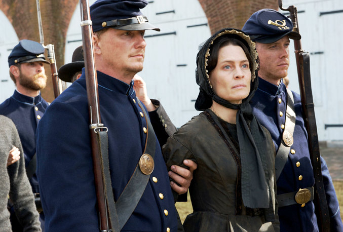
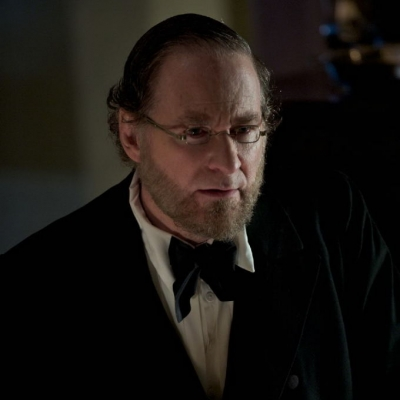

|
Is it possible to produce a credible film about the Civil War without mentioning
slavery? I've now seen The Conspirator (opening this week across the country) twice, and
I'm still not sure. This very question provides one of the many elements that make this
|

Robin Wright as Mary Surratt in The Conspirator
|
film such a superb vehicle for teaching and for public conversation on the Civil War. And
remember: for the next five years there will be a lot of public conversation about the
Civil War.
The Conspirator focuses on the trial of Mary Surratt, a Washington boardinghouse keeper
accused of participating in a conspiracy that successfully assassinated President Lincoln,
produced an attack on Secretary of State Seward, and failed to implement a planned
assassination of Vice President Johnson. The film is the firstborn of The American Film
Company, which "produces feature films about incredible, true stories from America's
past." Specifically, The Conspirator claims to be "based on actual events. Care has been
taken to ensure historical accuracy. Names, places and events may have been changed for
creative license purposes only." Many historians will quibble here and there about that
creative license, especially scholars who know more than I do about the details. My
concerns have been about one big issue: slavery.
The word is never mentioned in the film. Nor are we told that Mary Surratt was a
slaveholder (she owned at least two). Nor is there any implication that the War itself was
about slavery. We hear a lot about "our cause" with reference to the Confederacy. When
Mary's son John observes, "if this cause ain't worth fighting for, what is," the
implication is that the "cause" has something to do with southern honor. One might infer
this again when Mary tells her attorney, a heroic Union Army officer, that "we are the
same," after she asks if he had ever deeply believed in a cause beyond himself, and he
points to his war record. Mary's daughter bitterly refers to the "cause" as "pointless."
It was not pointless. The Confederacy was deeply committed to a principle: the right of
one human being to own, buy, and sell another. This was the point of secession in the
first place. The soldiers who fought for either side might not have thought they were
fighting over slavery (though the thousands of African American soldiers in the Union Army
|

Kevin Kline as Edwin M. Stanton in The Conspirator
|
knew this very well), but secessionist leaders knew it, Frederick Douglass knew it, and by
the time of his second inaugural in 1864, Lincoln knew it.
So, does the film have to tell us this, or even give us a hint about it? By eliding the
issue, and casting Secretary of War Stanton as a vengeful zealot reminiscent of a Dunning
School historiography that no professional historian takes seriously anymore, does the
film perpetuate persistent ideas about a noble South defending its honor?
I don't know. I first thought it did. But the second time around, and especially after
stimulating conversation that itself points to the quality of the film, I questioned
whether it would have been possible to raise the issue of slavery without detracting from
the film's purpose. I paid more attention to what the film was trying to accomplish,
especially to its brilliant and evocative treatment of the legal issues that stand at its
center in a way the Civil War itself does not. What matters, in the end, is that The
Conspirator raises these questions. And by doing so, it cogently, provocatively, and
accessibly offers historians not only a fruitful resource for the classroom, but an
enticing opportunity to engage public culture through reviews, blogs, and letters to their
newspapers.
Source: Jim Grossman, The Blog of the American Historical Association (2010).
|